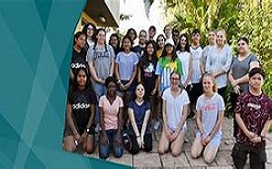

Vice Chancellor and Professor DR.Maddock
Charles Darwin University photography
club is based at casuarina campus with
forty five current members and this
club is founded by Vickneshwaran
Vithurson student of Information technology and includent many skillfull
photographers who are helpful for CDU success and capturing moments.Building
strong creative society to meet the innovative ideas and opprtunities.We have
the equal opportunities to every photographic skills and we have support to
promote skillful photographers to improve their own techniq and push them
toward photographic industry.Charles Darwin uni photography club has a
unique scope to create and capturing moments.

President of CDUPC
I'am Vithurson graduated in Bachelors in photography where i learnt skills
to capture moments,nature and beautiful innovations.We develop our club in order
to implement ideas and learn skills to youngsters.Our photographers are skillful
,talented and has lots of new creative ideas which they have worked for leading
photographic companies.Charles Darwin University has lots of Infrastructure to
facilitate young photographers to achieve their goals.
professionals worked
Chief photographer MR .Kawser(bachelors of information technolgy) has
is skillfull in wildlife photographic,he has technique and explore wild and
capture the life and concept of wildlife.He is teaching 10 student of wildlife
of wildlife photgraphy and motivate many students.You can contact him via club.
Deputy president MR .Rafa (Bachelors of information technology) has orgnised
platforms to for new photographers to gains ideas about techniques and skills .
Also their are 40 current members in our club and they organise many events
across CDU and Northern territory.We are specialised in helping photographers to
become professionals.